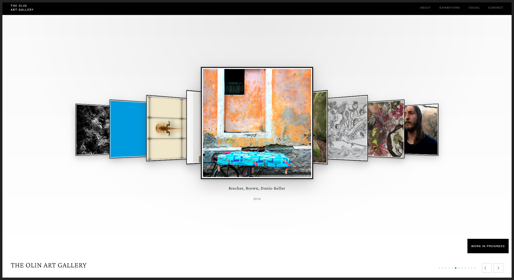
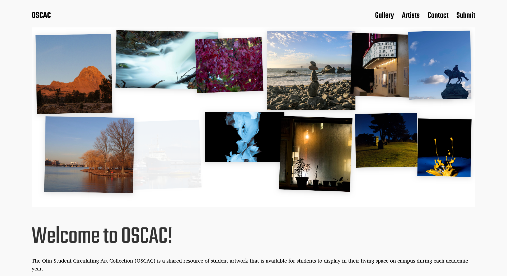

Sep 2026 – Present
Digital Experience Designer and Web Platform Engineer
Franklin W. Olin College of Engineering · Part-time · Needham, MA
- Redesigning and redeveloping three websites from the ground up (Olin Art Website, The Michael E. Moody OSCAC Website, and a professor's personal art portfolio) using WordPress with custom CSS and PHP, as the sole engineer and designer across all three.
- Managing and curating existing and incoming content across exhibitions, events, and visual media archives spanning Olin's art and photography program catalog.
- Architecting and maintaining the full platform lifecycle, from design system decisions to deployment and content architecture, on BlueHost-hosted infrastructure.
Debugging
JavaScript
Continuous Integration and Continuous Delivery (CI/CD)
User Experience Design (UED)
HTML
Cascading Style Sheets (CSS)
Database Management System (DBMS)
Databases
Testing
WordPress
Database Systems

